Peradeniya University and Arunachalam Padmanabha
Peradeniya University and Arunachalam Padmanabha
Jaffna Monitor hellojaffnamonitor@gmail.com 50 Peradeniya University and Arunachalam Padmanabha By: Sarawanan Komathi Nadarasa In the lineage of Kumaraswamy, Sir Pon Arunachalam is regarded as a progressive historical figure, free from accusations of caste, class, or ethnic bias. He had eight children: three sons and five daughters. The eldest among them was Padmanabha. Before Arunachalam's demise, Padmanabha had already passed away at a young age in England. Padmanabha's death remains a mystery to this day. Additionally, information about him is extremely scarce. Many have grown weary of searching for details about him. This raises the suspicion that information about him and the circumstances of his death may have been deliberately concealed. It was only when a Sinhalese scholar shared some details about him with me that I was encouraged to learn more about such a personality. According to the scholar, Padmanabha spent time in England with a woman there. Concerned by this, Padmanabha's

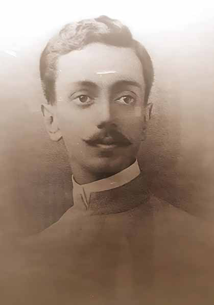
Jaffna Monitor hellojaffnamonitor@gmail.com 51 father, Ponnambalam Arunachalam, traveled to England to bring his son back to Sri Lanka. Unfortunately, he found only his son's lifeless body, as Padmanabha had allegedly committed suicide just before his father's arrival. Despite many months of effort to verify the credibility of this information, my attempts have been unsuccessful. Nevertheless, I felt compelled to record the few important details I had uncovered about him. To my knowledge, there is no record of Padmanabha in Tamil. Background of University Formation in Sri Lanka Though the discussion about establishing a university in Sri Lanka took place in the Legislative Council as early as 1884, this dialogue only progressed to the next stage in the early 20th century. In 1906, the Ceylon University Association, formed under the leadership of Sir Ponnambalam Arunachalam, served as the primary foundation for establishing the Ceylon University College, a higher education institution in Sri Lanka. On January 1, 1921, this college was inaugurated at the "Regina Walawwa" building on Thurston Road (now Kumaratunga Munidasa Mawatha) in Colombo. This building was later renamed College House. This College House was recognized as an institution for higher education by the University of London, allowing students to pursue external degrees in arts, law, and science. The first principal of this educational institution was Dr. Robert Marrs. Significant financial contributions were made by individuals such as Sir Pon Ramanathan, Sir Pon Arunachalam, Sir John Kotelawala, D. R. Wijewardena, and D. S. Senanayake. D. R. Wijewardena dedicated one of his own houses, named 'Sangavasa', to monks studying at the institution. In 1938, Sir Ivor Jennings became its principal. A council called the College Council was established to assist the principal in administration. The constitution for the new university was developed by Sir Walter Buchanan Riddell, who was the chairman of the British University Grants Committee and the Ceylon University Commission. This constitution was modeled after the Hong Kong University constitution and was said to resemble the administrative models of the universities of Bristol and Birmingham in Britain. Although a bill was introduced again in the Legislative Council in 1930 to pursue this effort, its implementation was delayed due to World War II and a malaria Sir Pon Arunachalam
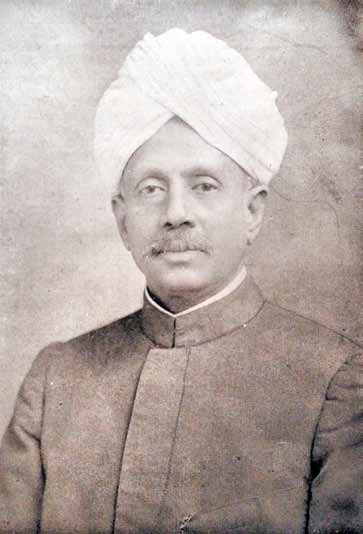
Jaffna Monitor hellojaffnamonitor@gmail.com 52 epidemic. 1942, Ivor Jennings was sent from England to reform Ceylon's constitution and educational system. Subsequently, the Legislative Council enacted it as University Ordinance No. 20 of 1942. Arrangements were made for the construction of the University of Ceylon. In 1928, the Legislative Council appointed a committee (the University Site Committee) to identify a location for establishing the university. The Legislative Council agreed that the university to be established should be autonomous and have residential facilities. Although there was a debate on whether to establish the university in Colombo or outside of Colombo, it was eventually decided to set it up outside Colombo. Accordingly, two places, "Peradeniya" and "Aruppola" in Kandy, were proposed, and it was finally decided to establish the university in Peradeniya. A large tea plantation was being transformed into a university. However, there were two major reasons why it could not be completed on time. The first reason was that the area was submerged in a major flood. The second reason was the ongoing Second World War. Dr.Andreas Neil and Dr. Samuel Chelliah Paul prepared and submitted the project plan for acquiring land for the university in Peradeniya. Initially, 700 acres were acquired, which later expanded to 1,700 and eventually increased to 2,400. On July 1, 1942, the Ceylon Medical College and the Ceylon University College were merged to form the University of Ceylon. Arunachalam Hall was established in 1950, Jayatilaka Hall, Mars Hall, James Peiris Hall, and Hilda Obeyesekere Hall were established in 1952, Sangamitta Hall in 1953, and Ramanathan Hall in June 1954. Sir Ivor Jennings served as its first Vice-Chancellor. The University of Ceylon operated in Colombo from 1942 to 1950. In 1950, after establishing the necessary infrastructure such as university buildings, lecture halls, libraries, hostels, gymnasiums, sports fields, and other facilities, the University of Ceylon officially began its operations in Peradeniya in 1952. The University of Ceylon, which was relocated from Colombo to Peradeniya in 1952, was scheduled to be officially opened on October 6, 1952. However, the official opening was postponed due to King George VI of England's death. The university was formally inaugurated on April 20, 1954, by Queen Elizabeth and the Duke of Edinburgh. During the opening ceremony at the university, the Duke of Edinburgh delivered a speech in which he said, "Starting a university is not easy. Once started, it must always remain open. For example, during the Second World War, even when air raids and bombs fell in London, shops remained open... Similarly, the university must remain open at all times." In 1972, following the enactment of the University Act No. 1, all universities in Sri Lanka were renamed as the University of Sri Lanka. Accordingly, the University of Ceylon in Peradeniya was maintained as the Peradeniya Campus of the University of Sri University of Peradeniya
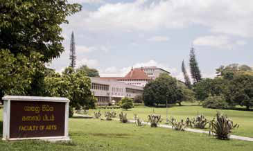
Jaffna Monitor hellojaffnamonitor@gmail.com 53 Lanka. Under the University Act No. 16 of 1978, the universities in Sri Lanka were once again established with individual names. Thus, from 1979 onwards, it has been named the University of Peradeniya and continues to be known by this name to the present day. Timeline: 1942-1952: University of Ceylon 1952-1972: University of Ceylon, Peradeniya 1972-1978: Peradeniya Campus, University of Sri Lanka 1978 - present: University of Peradeniya When discussing the overall design of the buildings, lecture halls, hostels, classrooms, libraries, gardens, water features, ponds, and lakes of the University of Peradeniya, the university's first Vice-Chancellor, Dr. Ivor Jennings, remarked, "No university in the world has such a setting." The names of those who funded the buildings and provided books for the university are mentioned in the commemorative book published on April 20, 1954, and also in the book released for the "University Opening Ceremony" in 1992. The pioneers behind the establishment of this university included Supreme Court Judge M.T. Akbar, Sir Ponnambalam Arunachalam, Sir Marcus Fernando, Sir Baron Jayatilaka, Dr. Robert Marrs, Sir James Peiris, Sir Ponnambalam Ramanathan, D.S. Senanayake, and D.R. Wijewardena. It is essential to mention another significant aspect. The people of the hill country substantially contributed the funding for the construction of the University of Peradeniya. Their labor was the primary source of Sri Lanka's revenue. Every cent spent by the Sri Lankan government on creating this university was derived from the income generated by these people. Their donations of personal wealth to the university reflect the unity and harmony of that era, transcending ethnic, religious, and class differences. This unity was a testament to the ethnic harmony of the time. The establishment of the University of Peradeniya also marked the end of the era when students had to rely on foreign countries for higher education. Padmanabha and William Digby Among those who petitioned the British Crown for the establishment of the University of Peradeniya were notable scholars such as Ponnambalam Arunachalam, Ponnambalam Ramanathan, D. R. Wijewardena, Marcus Fernando, James Peiris, and D. B. Jayatilaka. William Digby
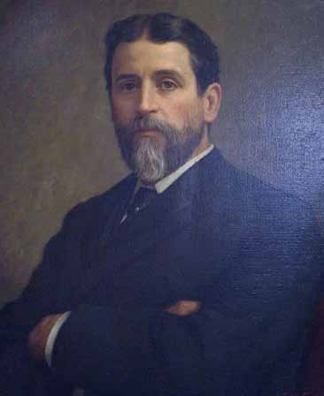
Jaffna Monitor hellojaffnamonitor@gmail.com 54 The first collection of books for this library was donated by Sir Pon Arunachalam. Sir Pon Arunachalam passed away in 1924. His eldest son, Padmanabha, had already passed away in England in 1921. The collection of books from Padmanabha's library was the first major donation to the University of Ceylon library.1 A total of 1,421 books were donated. These fortunate donations laid the foundation for what would later become one of the finest libraries in Sri Lanka. The first recorded book from Padmanabha's Encyclopedia Britannica collection was registered on April 8, 1921.2 From number one to 1,421, these books are still available under the "Padmanabha Collection" today. The library now operates with over 800,000 books. After Padmanabha, many prominent political leaders and scholars of Sri Lanka have donated their collections to this library towards the end of their lives. These collections are preserved under their names. While we know the year of Arunachalam Padmanabha's death, his birth year remains unknown. Consequently, we cannot determine his age at the time of his death. Some records depict him as a student studying in England, but the profound reports and books he authored suggest he was not as young as these records imply. 1. V.Muttu Cumaraswamy, Founders of Modern Cey- lon (Sri Lanka), Eminent Tamils. Uma Siva Pathipa- kam, Jaffna, 1973 2. Kanchana Dehigama, Centenary of a Library under the feet of giants: a retrospective, NewsletterUniver- sity Librarians Association of Sri LankaVolume 15, Issue 04, October-December 2021, https://lib.cmb. ac.lk/history-of-the-library/, http://www.lib.pdn.ac.lk/ about_us/history.php, During the research for this article, an important document was found. In the June 1908 issue of the Ceylon National Review (no.6), Padmanabha authored an extensive article titled "Reform of the Ceylon Legislative Council." He also provided a detailed introduction to William Digby's article, "An Oriental Colony Ripe for Self-Government," which discusses the necessary political reforms for Ceylon. Notably, William Digby had passed away in 1904.3 The article spanned 31 pages and was published as a small book in the same year.4 It was also released as a pamphlet, as indicated by Padmanabha's writing.5 Padmanabha published this article as a pamphlet in 1904, the same year William Digby died. In his recommendations, Digby emphasized the importance of Tamil representation in Colombo. He argued that five representatives should be allocated to the Legislative Council for Europeans, Burghers, Tamils, Sinhalese, and Muslims/Malay communities. Forty years later, in 1919, when the Ceylon National Congress was established, Sir Pon 3. William Digby was not only a famous journalist but also a radical social reformer. He was a vocal critic of colonial methods in India and Sri Lanka and an advocate for Indian workers at that time. He served as an associate editor of the Ceylon Observer in Sri Lanka and wrote for The Madras Times in Madras. He was also the editor-in-chief of the magazine. Sir Pon Arunachalam was his close friend, and this friend- ship likely brought him closer to Arunachalam's son, Padmanabha. During his involvement in the the Tem- perance Movement, William Digby, along with Ram- anathan and Arunachalam, actively led the movement against the paddy tax. 4. A. Padmanabha, Reform of the Ceylon Legislative Council', in Ceylon National Review Vol: 11, No. 6 1908. 5. James T.Rutnam, Sir Ponnambalam Arunachalam, 1853 – 1924, (2nd Edition) Colombo, 1988.
Jaffna Monitor hellojaffnamonitor@gmail.com 55 Arunachalam endorsed the same demand for Tamil representation. You might know that he was later disappointed and subsequently left the Ceylon National Congress. Notably, Digby had proposed this demand as early as 1877, and by 1908, Padmanabha was actively supporting this cause. During his time in England, Padmanabha was encouraged by his father, Arunachalam, to meet with Lord Milner, the then Secretary of State for the Colonies, to discuss the political reform situation in Sri Lanka.6, 7 This article's detailed political reform recommendations confirm that Padmanabha was deeply engaged in Sri Lankan politics and possessed profound political thinking. Unfortunately, gathering more information about Padmanabha's political role and involvement has been challenging. Within the Gate Mudaliyar A. Coomaraswamy family, five members served in the Legislative Council. These include his son- in-law Edirimanasinghe Mudaliyar, his son Sir Coomaraswamy, and his grandsons Ponnambalam Ramanathan Coomaraswamy, Ponnambalam Coomaraswamy, and Ponnambalam Arunachalam Coomaraswamy. Following in their footsteps, it is evident that Padmanabha also had significant social and political involvement. University of Peradeniya Library In Sri Lanka, the Printing and Publications Act, introduced in 1886, was amended in 1952. According to this amendment, four copies of every publication issued in Sri 6. M.Vythilingam, Ramanathan of Ceylon, The Life of Sir Ponnambalam Ramanathan, Vol II, 1977. 7. H.A.J.Hulugale, The life and Times of D.R.Wijewardene, Lake House, Colombo, 1960 Lanka must be submitted to the Department of National Archives. One of these copies is kept at the National Library, another at the National Museum, the third at the Peradeniya University Library, and the fourth at the Ruhuna University Library. Unfortunately, today, many do not adhere to this law. As a result, there is a risk of losing the opportunity to preserve books and journals published in Sri Lanka nationally. During my discussions with the librarians at the University of Peradeniya Library when I donated my books to the library, they expressed concern about this issue. It is also important to note that the history of this library predates the history of the University of Peradeniya itself. Today, the Chief Librarian of the University of Peradeniya Library is a Tamil scholar, Dr. Maheswaran, who is an excellent librarian. This library houses very rare and unique ancient palm-leaf manuscripts of Sri Lanka. It is the repository of the complete old original palm-leaf manuscript of the Mahavamsa. After the Mahavamsa manuscripts were declared a World Heritage in June, these palm-leaf manuscripts were placed in iron boxes and are now preserved in a special room with military security, as I learned during my visit there. Unfortunately, I noticed that only about three percent of the books and documents in this library are in Tamil. This situation is not unique to this library alone but extends to other major institutions in Sri Lanka regarded as national archival organizations, such as the National Archives, the Colombo Museum Library, and the National Library, among others.
Jaffna Monitor hellojaffnamonitor@gmail.com 56 Story Translated from the original Tamil short story saṅkalpa nirākaraṇam (rq;fy;g epuhfuzk;) from the 1964 collection of short stories titled akkā (mf;fh) by A. Muttulingam Translated by: Eḻuttukkiṉiyavaṉ (vOj;Jf;fpdpatd;) Nadēsan is one of those Colombo dwellers who eagerly yearn for: “when will the next long weekend come around, so that I can make a quick trip to Jaffna.” He was standing on the border line of the horrendous grief called separation. Never before had he experienced such pain. He did write letters. But were they mere letters? They were repositories of his tears; throbbing of his heart. But for how long can declarations of love in letters Resolution and Refutation
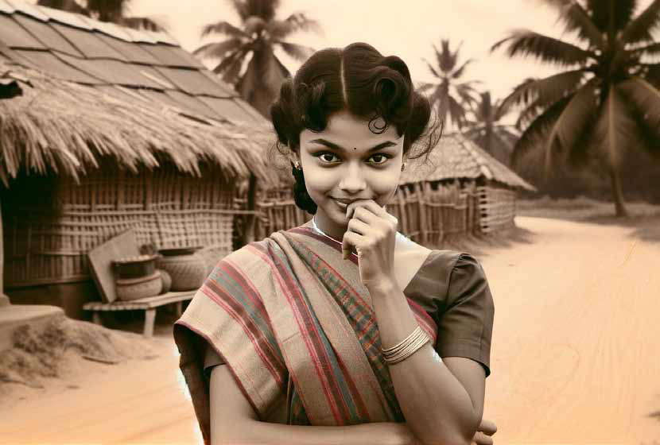
Jaffna Monitor hellojaffnamonitor@gmail.com 57 keep his wife content? ‘She is just a naive child; What did she gain by getting married? Our half-baked interactions were like a puppet show of shadows; when did we have a chance for a heart-to-heart conversation?’ How did she, who would stand shyly in front of him, biting into her plaits, learn to write this way? ‘I have never seen your face fully; I have heard that dimples form on your cheeks when you laugh, I have never got to experience even that; Still …’ ‘I am your wife, publicly betrothed to you as your own. Shyness overcomes me when I think of it …’ Every word was like a red-hot spear piercing his heart. So, what, it is just his luck! Luck manifests to different people in many different forms. But his luck! The day after the wedding, he left on what they so eloquently call in English, “the honeymoon.” But the day they set foot in Colombo, it wasn’t the usual city of Colombo. There were riots everywhere; hatred; ethnic hatred. People were beating and killing other people. The streets of the great city of Colombo were drenched in blood, as though Mother Earth, unable to tolerate this outrage, shed tears herself. The rough ground lay below. The broad canopy of the sky rose above. A heavy police cordon prevented any unauthorized entry. It was teeming with humanity. He and she spent that fabled “first night” amidst this sea of humanity. A mind-piercing look emerged from the depths of his heart. The single tear droplet that struggled to emerge ended up dissolving all her heart’s dreams. For ten days, they suffered as refugees amidst the sea of refugees. When they finally left for Jaffna by a refugee ship, he with a stubble, and she with her hair in a mess, love was the last thing in their minds. When they set foot in their village, overcome with embarrassment, an emergency telegram arrived, summoning him back to work. Back to the city of Colombo!
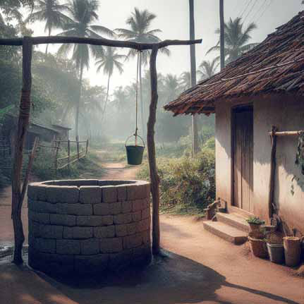
Jaffna Monitor hellojaffnamonitor@gmail.com 58
2 Kamali didn’t even notice that it got dark. Nadēsan’s letter w lay sprawled on her chest. Everything she saw, everything she sees, seems to her like reflections and reverberations of grief. Her heart pained as though it had lost everything. Through it she felt the anguish of having lost some nameless bliss. ‘Is everything Vimalā said true?!’ ‘Chee …. Perhaps this is how everyone says it out aloud!’ “Kamali! Tell me the truth. Can’t you really tell your husband apart just by the sound of his footsteps?” ‘Vimalā isn’t a fool like me; I am ‘married’ only in name.’ ‘Look at her! How old is she? When I started wearing a sari, she hadn’t even graduated to wearing a long skirt.’ ‘It seems his big toe is enough for her to identify him. Apparently, she knows the warmth of his breath… is it not just the breath? … Che… if she was still asleep, he apparently doesn’t wake her up by touching her, but … bends over … on the lips, …. ch- chee… …’ ‘What would she have thought of me – what else – she would have pitied me.’
One could still hear the sound of Pālaṉ’s sobbing. It was already dark. Kamali lit a lamp and placed it on the table. “Lift your head Pālaṉ; enough crying; it is a kerosene lamp, if you knock it over, that’s it.” “No, I won’t. I will stay like this!” His parents had not taken him along to the wedding but left him behind to keep Kamali company. His
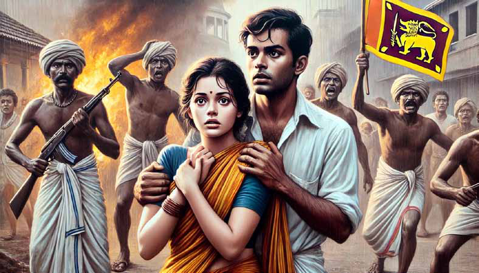
Jaffna Monitor
hellojaffnamonitor@gmail.com
59
anger has not entirely subsided.
Kamali lifted the kudam to her hip and started
towards the well. Like the soft blanketing of
dusk, a darkness was filling her heart. The
crack from a nameless sorrow was slowly
pervading the depths of her heart.
She heard the sound of someone taking a bath.
Kamali was startled.
“Who is there?”
“It is just me.”
“Is it you Rāsaṉ?” she called out, in a voice
palpable with relief.
“Why akkā, were you scared?” He
guffawed.
“No, I thought it was some stranger …”
“Give me a couple of buckets of water, thambi
… … …”
‘I was scared of Rāsaṉ! He was just wee high
before … …’
‘Perhaps boys grow up fast!’
“Why Rāsaṉ, did your ammā and everyone
else go to the wedding?”
“They? They went already earlier.”
“So no one else is at home!”
“No akkā, it is just me!”
When she bent down to lift the kudam up, her
thāvaṇi slipped.
She hurriedly gathered it up and draped it
back over her shoulder. In the dull moonlight,
her instincts told her that he was looking at
her intently. She was pleased.
When she lifted her head, she was taken
aback. His stunned look with hair dripping
with water, his forelocks covering the
forehead – reminded her of something.
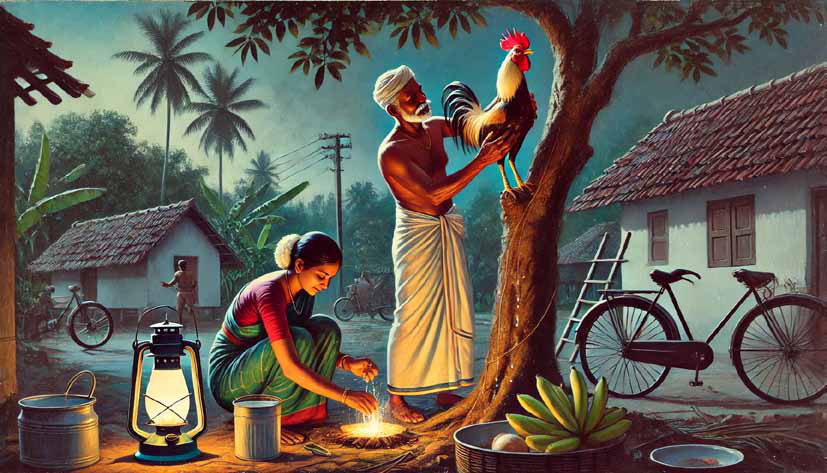
Jaffna Monitor hellojaffnamonitor@gmail.com 60 ‘He … he is like this, too…’ The second time she came to the well, her heart was pounding, thinking ‘would Rāsaṉ have left by now?’ ‘How old is Rāsaṉ now? Sixteen?’ ‘He sat for his Senior Secondary School examinations already last year!’ Rāsaṉ was lathering soap on. “Why Rāsaṉ! So, are you the one guarding the house?” “Yes akkā, exams are approaching; I have to stay home to study… …” For some reason, a little smile crossed his lips. The dimple on his cheek. His cute dimple. ‘Those cheeks – those hairless silky cheeks’ – she wanted to regard them till eternity. The moon rays that reflected off those dimples reached out and shyly touched her breasts that were heaving with no reason. She jolted herself out of her reverie and grabbed the rope tied to the well sweep. “You want water! I will draw it for you akkā.” “No thambi, you dry yourself first.” “It is ok. You shouldn’t be drawing water when it is this dark.” A strange feeling came over Kamali. She wanted to fondly call out “Rāsaṉ!” to her heart’s content. He grabbed the bucket from her. In doing so, his soapy hands gently touched her slender arms. Kamali’s heart bubbled over its rims. A new feeling.
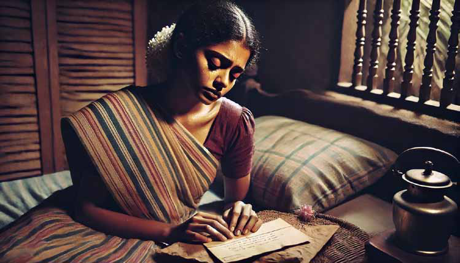

Jaffna Monitor hellojaffnamonitor@gmail.com 61 When Rāsaṉ drew water, his hands trembled for some reason. 3 When she started towards the well, carrying a kudam, for the third time it did not look like she was doing it of her own free will. It was as though she was possessed by a demon that was urging her forward. ‘Why, why?’ ‘I want to see him smile, just one more time’. The desire grew large and enveloped her entire mindscape. Afraid of a change of heart, she hurried towards the well. Rāsaṉ stood there towelling his hair. “Do you need more water?” – his voice was hoarse for some reason. “Just one more kudam” – the response came from somewhere deep within. “A… k… kā” – he blurted out, unsteady on his feet. Kamali was silent. She stood staring at him. “You… you … … will not tell ammā, will you?” What came over her? She stood transfixed like a statue. A displaced star in the sky was falling. When she lifted the empty kudam to her hips and walked away, it weighed a tonne. Inside the house, Pālaṉ’s sobbing could still be heard. 4 Her life inched forward in a “dream state” so to speak. Sometimes it looked like Kamali understood her situation, sometimes it didn’t. Whenever she was alone, she steeled her heart. But …
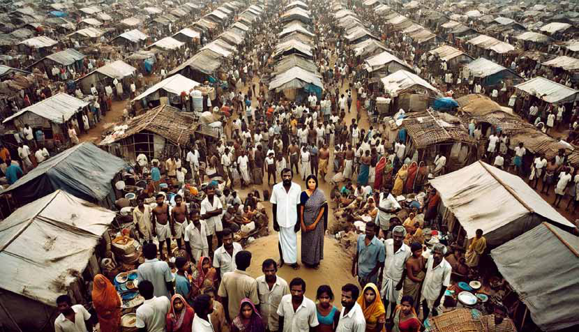
Jaffna Monitor hellojaffnamonitor@gmail.com 62 There was a pulsation, an eagerness, again and again kept pushing her into the abyss of sin. Kamali was just a walking corpse. Sometimes the letter from her husband melted her heart. She felt like running to his feet to bawl her heart out; on those days, she was resolute. But when the sun set and it was time to light the evening lamp, the crystal-clear sound of Rāsaṉ’s bicycle bell as he turned the corner at the junction would completely shatter all her resolve within a second. 5 Kamali was holding a kokkaththadi in her hand. The moringa tree had exceptionally borne a fruit. She jumped up aiming for the lone fruit. She knew that her husband loved it. She will cook it for him today. Nadēsan stood relishing this scene. He cannot see such a scene tomorrow since his time off from work was ending that day. He felt a discomfort in the depths of his heart. ‘Kamali – my darling Kamali – should I be separated from her again?’ Her tired face, laced with beads of sweat, was exquisite. “Kamali” he called out with great fondness as he turned her warm cheek towards him. “Ich. People are looking” she said shyly. The two people who sat on top of the passing cadjan bullock cart enjoyed the privilege of their vantage point a little too excessively. 6 He prepared to leave. She was left with the feeling that the entire world had come to a standstill. She understood every strand of his breath, every reverberation of his heart. It is only now that she understood the full meaning of separation. Nadēsan took her left hand. She felt a burning sensation. It was the same hand that Rāsaṉ’s unsteady soapy hands touched. “Chee” – she cast away those impure thoughts. But they rose up again, in a gigantic form, to torture her. Kamali cried her heart out, thinking of something. Tears flowed out of Nadēsan’s eyes, too. “Why are you crying?” She sobbed, wiping his tears with her tiny fingers. “Because you are crying!” “When will you return, aththaan” Silence was the response. Kamali’s two warm streams of grief mingled with his quivering lips. Unconsciously a resolution was forming in her heart. 7 It was a Sunday. There were no other friends in the boarding house. Everyone had gone off to see a movie. Nadēsan sat down with relief
Jaffna Monitor hellojaffnamonitor@gmail.com 63 to write a letter for Kamali. “Kamali! If I could grow wings this instant, would I not fly to you right away? Will I not admire every little detail of your walk, the way you decorate yourself, your voice, that little mischievous smile that curls in the corners of your lips? “My darling, as I write this letter, you will be standing beneath the familiar jasmine bush; your thoughts wander. All those thoughts … On the same day, at the same time as Nadēsan was writing this letter, many miles away — Kamali’s father was coaxing the ‘white lagoon’ chickens he had just brought from Colombo to climb up the tree. Inside, his wife was cleaning the soot covered hurricane lamp. Pālaṉ held his book wide open and was alternating between reciting the Vipulāṉanthar poem in a voice with a loudness that was uncalled for, and lifting his head to watch his sister:
“uḷḷak kamalamaṯi kiḷiyē
[It is the flower of your heart, parrot]
uttamaṉār vēṇṯuvatu” [ that the lord asks for] Kamali was chopping green plantains for dinner. She wasn’t paying attention to anything, not even to chopping green plantains. A darkness engulfed her heart, weighing heavily! At a distance, Rāsaṉ’s bicycle bell needlessly rang twice, as he turned around the bend by the tamarind tree. It echoed on Kamali’s bleeding fingers!
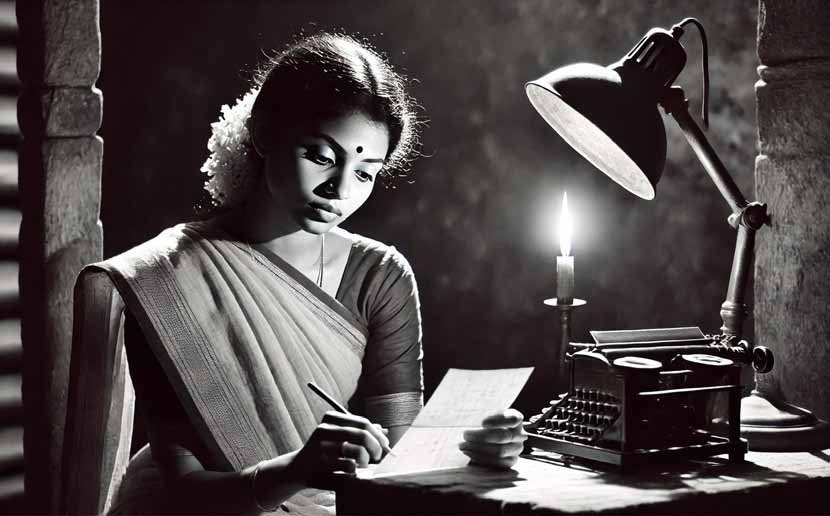